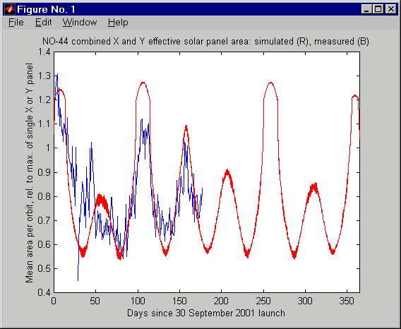

PCsat's Solar Orientation
US Naval Academy Satellite Lab, Bob Bruninga, WB4APR
PCsat is magnetically stabilized about its Z axis so the orientation of the +/- Z panels is according to the Earths Magnetic Field vector at each point in space. We have been working with Johann Lochner, ZR1CBC of the SUNSAT Team, who has developed a model of PCsat's orbit with respect to the Earths Field so that the total effects of Solar incidence angles can be predicted. These graphics compare our actual telemetry data to his orbital model.
The Z orientation of PCsat is important beacuse PCsat has its best
Solar panels on the +Z face, and its -Z panels failed on launch. Thus, the incidence
effect is significant to the overall PCcsat power budget.
In the following graphic Johann took our telemetry file (blue) and overlayed the results of
his magnetic model (red) to show the effective area
of the X and Y side panels. The predominant factor here is the Eclipse cycle due to precession
of the orbit around the Earth since these panels are equally exposed due to a <1 RPM rotation
about the Z axis.

Day 150 is about 1 March - 200 is about 18 April - 250 is about 8 June
The next graphic shows the contribution of the +Z face only. By day 1 April (180) we should
be getting maximum contribution from the +Z panels. But this is of course 90 deg out of
phase with the XY contribution. But the +Z panel has 50% better cells. Notice the overall
improvement as the Sun moves towards Summer in the Northern Hemisphere.
March 10 (day 160) is when our whole-orbit power budget went negative...
This final graphic shows the combined effect of all working faces of PCsat. The worst
case was about 1 April (180) and by 20 April (200) we should have a period of good Sun.
The next full sun period will begin about 5 June (245) after going through another minimum
about 20 May (Dayton HAMvention weekend)(230). ALthough PCsat will be seeing better Sun in
late April, it is doubtful if it will ever recover to normal operations due to the
hundreds of deep cycle discharges the batteries have experienced since the power
budget went negative in mid March.
PCsat is capable of operating while in the Sun, but the worst case peak power of
transmitting a packet
(about 20 Watts DC) is greater than the peak power available from the solar panels even
in full sun (7W), so batteries are always required to provide the 1 Second peak current for
a successful packet. Once PCsat's batteries are completely worn-out, even transmitting
one packet will cause a power drop and a RESET. This scenario will be the final end
of PCsat's usefull life.
|
USNASatellite Ground Station |
|
|